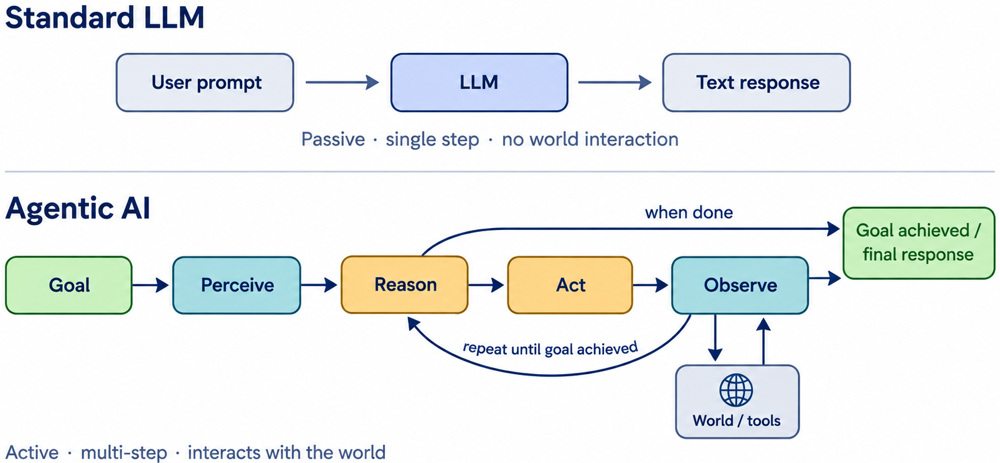
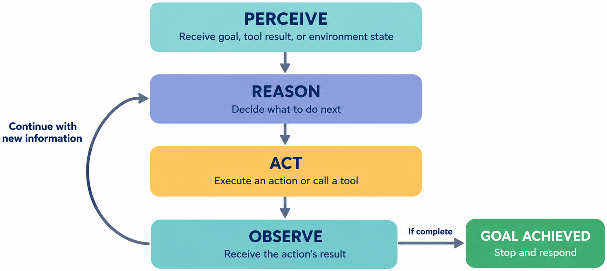
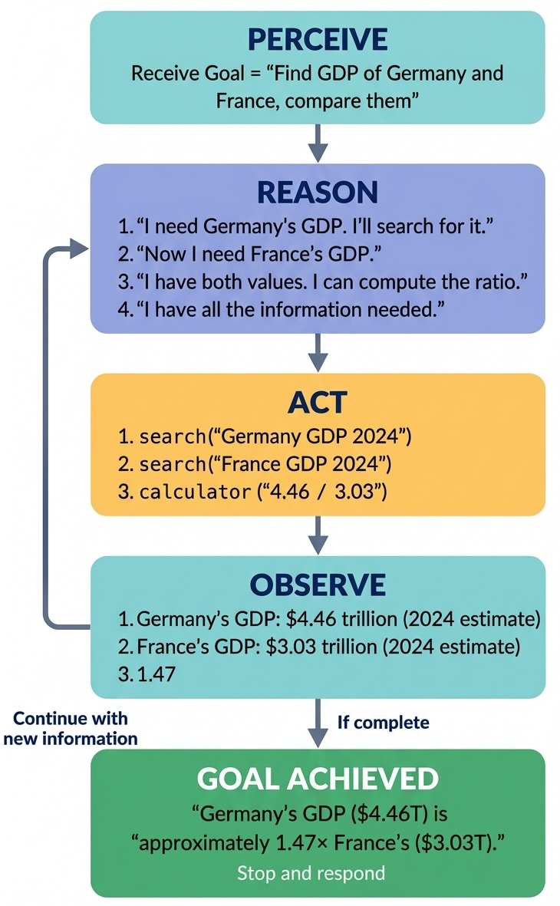
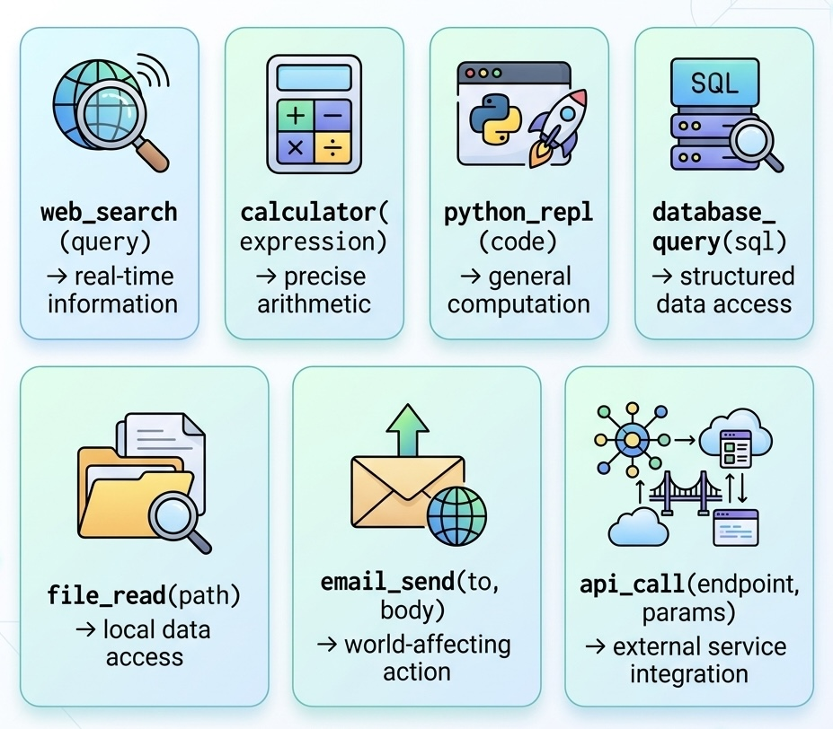
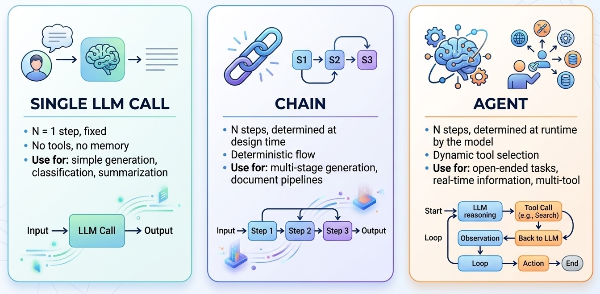

Remark
These lecture notes are in early access and will continue to evolve based on classroom experience and feedback.
8.2. Introduction to Agentic AI#
8.2.1. Learning objectives#
By the end of this section, you should be able to:
Define an AI agent and explain how it differs from a standard LLM call and a fixed chain.
Describe the Perceive-Reason-Act-Observe (PROA) loop and trace it through a example.
Identify the four core components of an agent system: LLM backbone, tool registry, memory, and planning mechanism.
Explain the shift from language models as responders to language models as actors.
Describe what open-source LLMs can and cannot do as agents.
8.2.2. From Responders to Actors#
In every interaction before this section, language models played the same role: receive a prompt, generate text. Even in the chains and ReAct agents of the previous sections, the model was fundamentally reactive — responding to inputs rather than pursuing goals.
Agentic AI represents a qualitative shift:


Fig. 8.3 Comparison between standard LLMs and agentic AI. Standard LLMs operate as passive, single-step responders without direct environment interaction, whereas agentic AI functions as an active, multi-step system that iteratively perceives, reasons, acts, and observes by leveraging external tools until its goal is achieved.#
The agent does not just describe how to search the web — it actually searches the web. It does not just suggest a calculation — it executes the calculation and uses the result. The difference between describing and doing is the defining characteristic of agentic systems.
8.2.3. The PROA Loop#
Agentic AI systems operate in a continuous Perceive → Reason → Act → Observe (PROA) loop:


Fig. 8.4 The PROA Loop flowchart illustrating the iterative AI agent workflow across four main stages: Perceive (receives goal or state), Reason (decides next action), Act (executes tool or action), and Observe (receives result). The cycle loops back to Reason with updated context until the process is complete and the final goal is achieved.#
An example for the question “What is the GDP of Germany and how does it compare to France’s?”:


Fig. 8.5 An execution trace of the PROA loop for the multi-step goal of comparing the 2024 GDP of Germany and France. The diagram details the specific goal perception, multiple steps of explicit reasoning (REASON 1-4), distinct actions (search, calculator), corresponding observations, and the final comparative answer.#
Each REASON step generates an explicit thought before each action — this is the ReAct pattern [Yao et al., 2023] from Section 5, now understood within the broader PROA framework.
8.2.4. The Four Core Components#
Every agent system consists of four components that work together, a decomposition consistent with recent surveys of LLM-based agent architectures [Wang et al., 2024]:
8.2.4.1. 1. LLM Backbone#
The language model that performs reasoning, interprets observations, and generates actions. The backbone is responsible for:
Understanding the goal
Deciding which tool to call at each step
Interpreting tool outputs
Recognizing when the goal is achieved
Stronger models (Phi-3-Mini, Llama-3-8B, GPT-4) produce more reliable reasoning and better tool selection. Smaller models can be used in constrained environments (Section 13).
8.2.4.2. 2. Tool Registry#
The catalog of actions the agent can take. Tools extend the agent’s capabilities beyond text generation:


Fig. 8.6 Overview of common AI agent tools and their functional capabilities, including real-time web search, precise calculation, code execution, database querying, local file reading, world-affecting actions, and API integrations.#
8.2.4.3. 3. Memory System#
Stores information across reasoning steps. Memory comes in three types:
Memory type |
Scope |
Content |
|---|---|---|
Working memory (short-term) |
Current task |
Reasoning trace, observations so far |
Episodic memory |
Current session |
Prior conversation turns |
Semantic memory (long-term) |
Persistent |
Learned facts, user preferences |
Working memory is simply the prompt context window — everything the agent has thought and observed so far. Episodic and semantic memory require explicit storage (lists, databases, vector stores).
8.2.4.4. 4. Planning Mechanism#
Determines how the agent structures its approach to the goal. Planning ranges from:
No planning — pure reactive reasoning (standard ReAct)
Step planning — decompose the goal into sub-tasks before starting
Tree search — explore multiple action paths in parallel
Multi-agent delegation — assign sub-tasks to specialized agents (Section 11)
8.2.5. Agents vs. Chains vs. Single LLM Calls#


Fig. 8.7 Comparison of three primary LLM workflow patterns: Single LLM Call (fixed single-step generation without tools or memory), Chain (deterministic multi-step execution planned at design time), and Agent (dynamic, runtime-determined reasoning loops using tools and iterative feedback).#
The progression from single LLM call → chain → agent corresponds to increasing generality and power, but also increasing complexity, latency, and unpredictability. Choose the simplest system that meets your requirements.
8.2.6. What Open-Source LLMs Can Do as Agents#
Not all models are equally capable as agent backbones. The key capabilities required:
Capability |
Requirement |
Models that qualify |
|---|---|---|
Tool-call formatting |
Produce syntactically correct |
Phi-3-Mini, Llama-3-8B+, Mistral-7B+ |
Tool selection accuracy |
Pick the right tool for the job |
Phi-3-Mini, Llama-3-8B+ |
Observation interpretation |
Correctly read and integrate tool results |
Phi-3-Mini, Llama-3-8B+ |
Loop termination |
Recognize when to produce |
Phi-3-Mini, Llama-3-8B+ |
Multi-step planning |
Decompose complex goals correctly |
Llama-3-8B+ (more reliable) |
Very small models (1–3B) can handle simple one-tool agents but struggle with complex multi-step reasoning. Section 13 explores this limitation in depth with TinyLlama and Phi-2.
8.2.7. Exercises and discussion#
PROA trace writing Choose a complex question that requires at least three steps (e.g., “What is the population density of the city where the most recent FIFA World Cup was held?”). Write out the complete PROA trace manually — including which tools you would call at each step and what their outputs would be. Then implement the agent and compare the actual trace to your predicted one.
Component analysis For each of the following applications, identify which of the four core components (backbone, tool registry, memory, planning) is most critical for success: (a) a customer support chatbot, (b) a research assistant that reads and summarizes papers, (c) a code generation assistant that runs and tests its own code, (d) a personal calendar scheduler.
LLM backbone comparison Run the same three-step agentic task with two different backbone models (e.g., Phi-3-Mini vs. a smaller 1B model). Compare: tool selection accuracy (correct tool chosen at each step), format adherence (valid
Action: / Action Input:format), and final answer quality. What capability gap is most visible at smaller model scales?